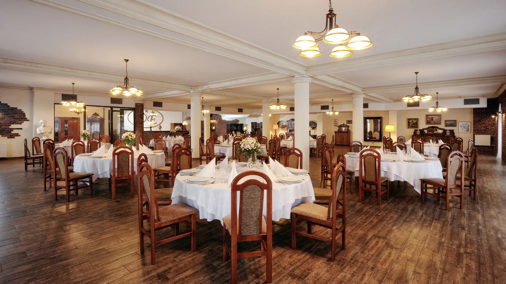
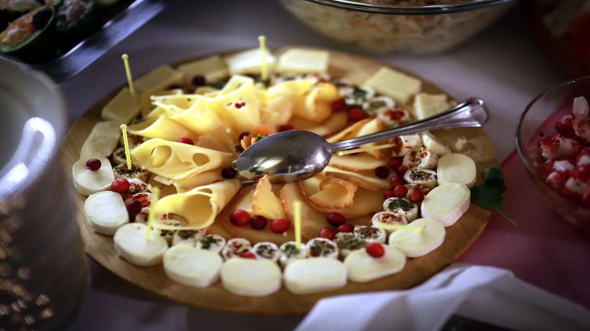

Przy wspólnym stole
Polska kuchnia w Dworku Emilii. Spotkajmy się przy posiłku, rodzinnym przyjęciu lub firmowym bankiecie.
Zapytaj o termin
Restauracja
Serwujemy dania kuchni polskiej. Dla najmłodszych gości przygotowujemy osobne menu.
Aktualną kartę dań, ceny i godziny otwarcia potwierdzimy przed wizytą. Jeśli planujesz posiłek dla większej grupy, skontaktuj się z nami wcześniej.
Zapytaj również o skład dań i możliwość uwzględnienia potrzeb żywieniowych gości.


Przyjęcia i catering
Menu przyjęcia ustalamy odpowiednio do jego charakteru i liczby gości. Organizujemy wesela, chrzciny, komunie, urodziny, rocznice oraz spotkania firmowe.
W ofercie jest również catering poza dworkiem. Podaj miejsce, termin i liczbę osób, a potwierdzimy możliwości realizacji.
Na szkolenia i konferencje można ustalić przerwy kawowe oraz obiad.